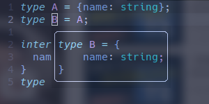
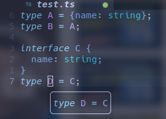

type & interface 区别¶
type¶
type 又称*类型别名*，其本质上是给所定义的类型去别名， 大多数场合下都可以使用 type
typescript 中的每一个类型都是一个集合， 像
type A = 0里的 0 表示的是仅有0一个值的集合， 由此类推type falseLike = false | null | '' | undefined， 则是表示 falseLike 是将包含后面几个仅有一个值的集合的集合作为一种类型; 而type Person = { name: string; age: number }则是表示将包含 name, age 两个字段的对象集合命名为 Person 类型
interface¶
接口的概念源自面向对象编程;
typescript 中的 interface 用以声明接口，描述**对象的属性**，
interface 和给对象取别名时的 type 还是类似的，以下代码中两种 Paper 实现是一致的：
interface Paper extends Array<string>, Article {
id: number;
field: string;
}
interface Article {
wordCount: number;
}
type PaperInType = Array<string> & {
id: number;
field: string;
} & Article;
区别¶
1. 范围不同¶
就像上面说到的那样，interface 只能描述 对象，而 type 则可描述所有数据， 因此它不能像 type 那样仅用 string, number 等类型的某些值组装类型
2. 描述的性质不同¶
type 只是取别名，而 interface 则是类型**声明**， 经过 interface 声明的类型是真实存在的，而 type 往往还会被 lsp 转换为原始结构 不过这点在使用上体验差距不大


3. type 不可重新赋值，而 interface 可以进行自动合并¶
不可重新赋值既是 type 的优点，也是 type 的缺点
不可重新赋值使 type 在编译的时候有更高的性能， 同时避免其在使用时出现二义性，但也使其拓展性降低
与之相反的是，typescript 可以通过声明同名接口来为该接口添加新的属性
interface ForExpand {
name: string;
age: number;
}
// 可以出现在不同的文件中
interface ForExpand {
expanded: boolean;
sex?: number
}
const a: ForExpand = {
name: 'name',
age: 18,
expanded: false
}
实际应用上便可通过这个特性来方便地封装一些模块的代码：
import {InterfaceWaitForExpand} from 'module';
declare module 'module' {
// 指定只拓展 module 模块的内容
export interface InterfaceWaitForExpand {
// 这里输出定义了两个字段到 InterfaceWaitForExpand 接口中
// ts 会将这两个字段合并到 module 中的 InterfaceWaitForExpand 接口
_field1: boolean;
_field2: string;
}
}
若想扩展全局的接口则可以使用 declare globle
declare global {
interface String {
padZero(length: number): string;
}
}
因此，对外 api 尽量使用 interface，方便扩展；对内 api 尽量使用 type，防止代码分散